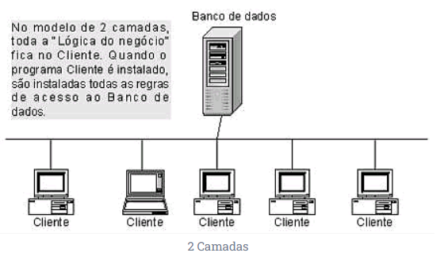
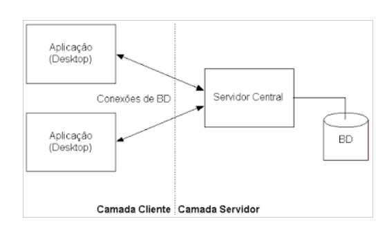
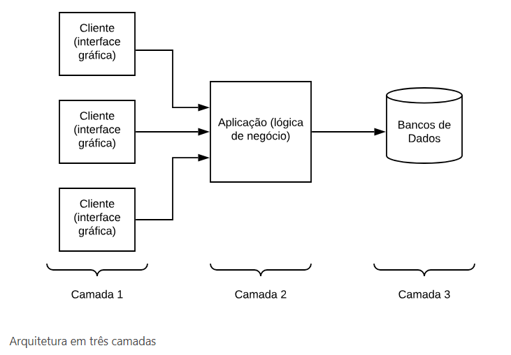
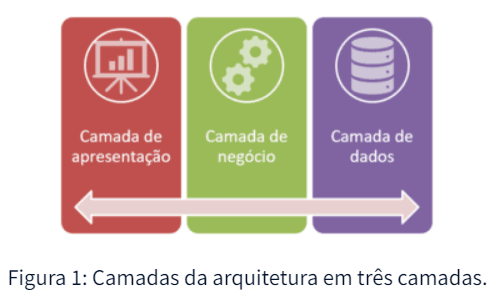
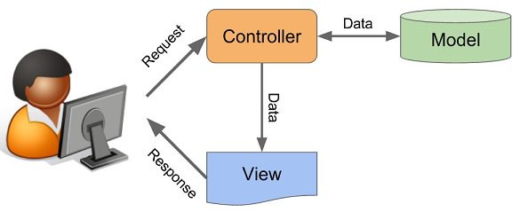
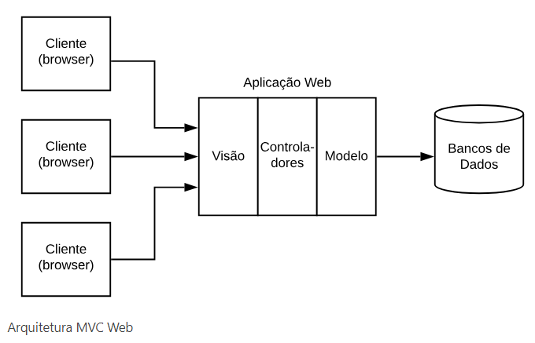

Arquiteturas de Aplicações em Java
Arquitetura em Duas Camadas
A arquitetura em duas camadas, também conhecida como arquitetura cliente-servidor, é um modelo onde a aplicação é dividida em duas partes principais: o cliente e o servidor.


Componentes:
- Cliente: Responsável pela interface do usuário e pela interação com o usuário. No contexto de Java, isso pode ser uma aplicação de desktop ou uma interface web.
- Servidor: Responsável pelo processamento dos dados e pela comunicação com um banco de dados, caso necessário.
Vantagens:
- Simplicidade: É um modelo fácil de entender e implementar.
- Bom para aplicações pequenas e simples.
Desvantagens:
- Dificuldade em escalar: Pode ser complicado lidar com um grande número de usuários simultâneos.
- Dificuldade em manter: Conforme a aplicação cresce, pode se tornar mais complexa de gerenciar.
Arquitetura em Três Camadas
A arquitetura em três camadas é uma extensão da arquitetura em duas camadas, onde a aplicação é dividida em três partes: a apresentação, a lógica de negócio e a persistência de dados.


Componentes:
- Camada de Apresentação (Interface): Responsável pela interação com o usuário, exibição de informações e recebimento de entrada. Pode ser uma aplicação de desktop, uma interface web ou uma aplicação móvel.
- Camada de Lógica de Negócio: Responsável por processar os dados, aplicar a lógica de negócio e tomar decisões com base nas entradas do usuário.
- Camada de Persistência de Dados: Responsável pelo acesso e manipulação dos dados no banco de dados.
Vantagens:
- Melhor organização do código: Cada camada tem uma responsabilidade clara, facilitando a manutenção e a escalabilidade.
- Facilita a reutilização de código.
Desvantagens:
- Maior complexidade inicial: Pode ser mais complicado de implementar do que a arquitetura em duas camadas.
Padrão MVC (Model-View-Controller)
O padrão MVC é um design pattern que separa as responsabilidades em uma aplicação, dividindo-a em três componentes principais: Modelo (Model), Visão (View) e Controlador (Controller).


Componentes:
- Modelo (Model): Representa os dados e a lógica de negócio da aplicação. Ele encapsula a manipulação dos dados e notifica as visões sobre quaisquer mudanças.
- Visão (View): Responsável pela apresentação da interface do usuário e pela exibição dos dados. Ela não contém lógica de negócio.
- Controlador (Controller): Recebe as entradas do usuário, processa as solicitações e interage com o modelo e a visão, garantindo a comunicação entre os dois.
Vantagens:
- Facilita a manutenção e a escalabilidade da aplicação.
- Permite a reutilização de código e a separação de preocupações.
Desvantagens:
- Pode adicionar complexidade, especialmente para aplicações muito simples.